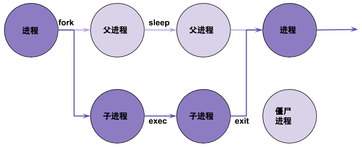
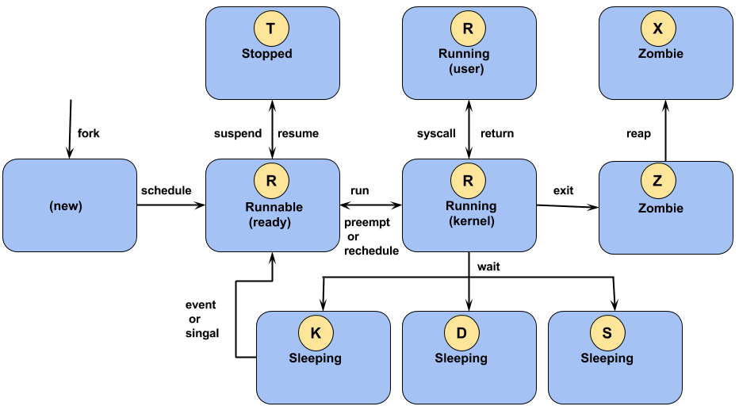

#include <stdio.h>
#include <unistd.h>
int main()
{
printf("The process ID is %d\n", (int) getpid ());
printf("The parent process ID is %d\n", (int) getppid ());
return 0;
}Linux 进程
本部分介绍 Linux 进程相关的一些概念。
Table of Contents
什么是进程
一个执行中的程序的实例叫做进程。一个进程包括:
-
一个分配了内存的地址空间
-
所有权认证、优先级等安全属性
-
一个或多个线程
-
进程的状态
进程的环境包括：
-
本地和全局变量
-
当前调度上下文
-
分配的系统资源，如文件描述符、网络端口等
PID & PPID
Linux 进程一般有一个 PID 和 PPID（父进程 PID），运行如下代码端输出 PID 和 PPID：
pid-ppid.c
父进程、子进程、僵尸进程

使用如下代码描述上图:
fork-exec.c
#include <stdio.h>
#include <stdlib.h>
#include <sys/types.h>
#include <unistd.h>
int main ()
{
pid_t child_pid;
char* program = "pwd";
char* arg_list[] = {"pwd", NULL};
/* Create a child process. */
child_pid = fork ();
printf("The fork return is %5d, PID is %5d, PPID is %5d\n", child_pid, getpid(), getppid());
if (child_pid > 0) {
/* This is the parent process. Sleep for a minute. */
sleep (60);
} else {
/* This is the child process. Exit immediately. */
execvp (program, arg_list);
exit (0);
}
return 0;
}-
fork可以产生一个子进程，且子进程继承父进程一切 -
exit进程推出 -
sleep进程休眠 -
Linux 上所有进程都可以创建一个子进程，RHEL 7 中的所有进程都是 systemd 的子进程
-
一般子进程退出，父进程会调运一个
wait方法结束子进程，如果没有则，子进程变成僵尸进程
上述程序运行可能输出
# ./fork-exec The fork return is 17535, PID is 17534, PPID is 13888 The fork return is 0, PID is 17535, PPID is 17534 /root/work
查看进程状态
# ps -e -o pid,ppid,stat,cmd ... 7534 13888 S+ ./fork-exec 17535 17534 Z+ [pwd] <defunct>
可以看到父进程 17534 创建了子进程 17535，子进程 fork 返回为 0，状态为 Z，即为僵尸进程。
进程状态
Linux 中任意一个时间点上一个 CPU 只能处理一个进程，当进程被安排执行，它立即需要获取 CPU 时间以及资源分配的更新。下图为进程状态变化:

| Flag | Kernel 定义的状态名称 | 描述 |
|---|---|---|
R |
TASK_RUNNING |
The process is either executing on a CPU or waiting to run. Process can be executing user routines or kernel routines (system calls), or be queued and ready when in the Running (or Runnable) state. |
S |
TASK_INTERRUPTIBLE |
The process is waiting for some condition: a hardware request, system resource access, or signal. When an event or signal satisfies the condition, the process returns to Running. |
D |
TASK_UNINTERRUPTIBLE |
This process is also Sleeping, but unlike |
K |
TASK_KILLABLE |
Identical to the uninterruptible |
T |
TASK_STOPPED |
The process has been Stopped (suspended), usually by being signaled by a user or another process. The process can be continued (resumed) by another signal to return to Running. |
T |
TASK_TRACED |
A process that is being debugged is also temporarily Stopped and shares the same |
Z |
EXIT_ZOMBIE |
A child process signals its parent as it exits. All resources except for the process identity (PID) are released. |
X |
EXIT_DEAD |
When the parent cleans up (reaps) the remaining child process structure, the process is now released completely. This state will never be observed in process-listing utilities. |